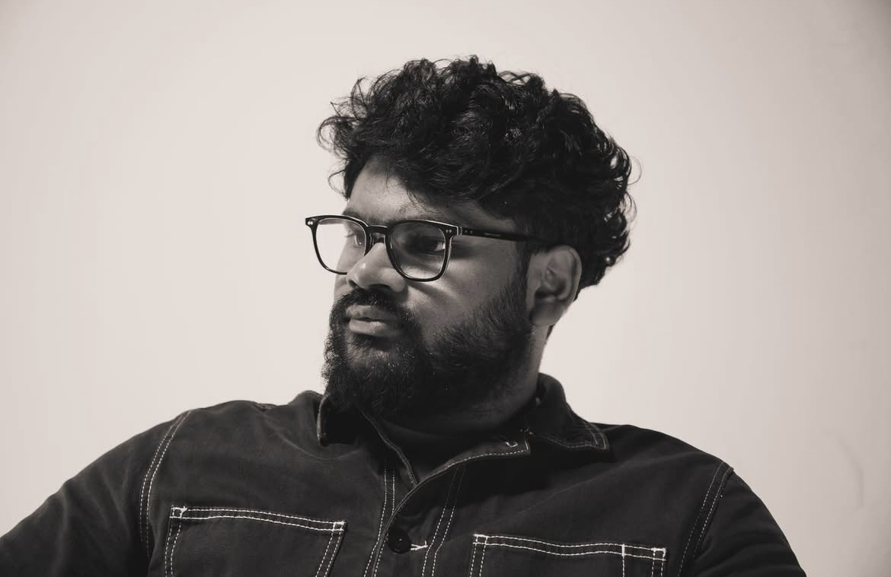
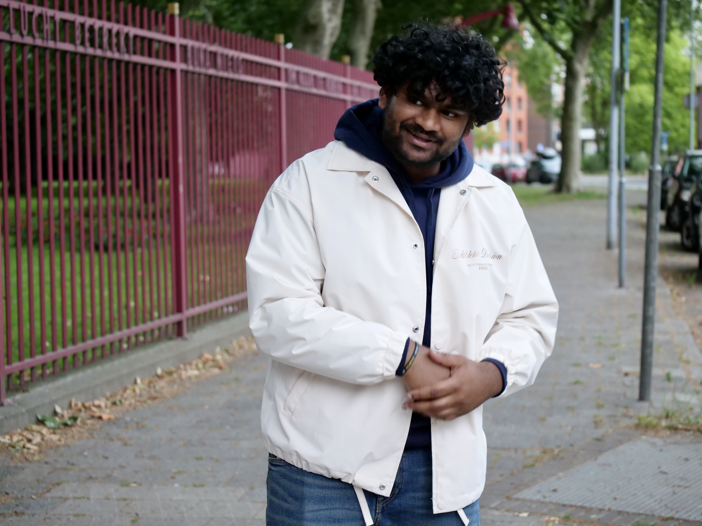
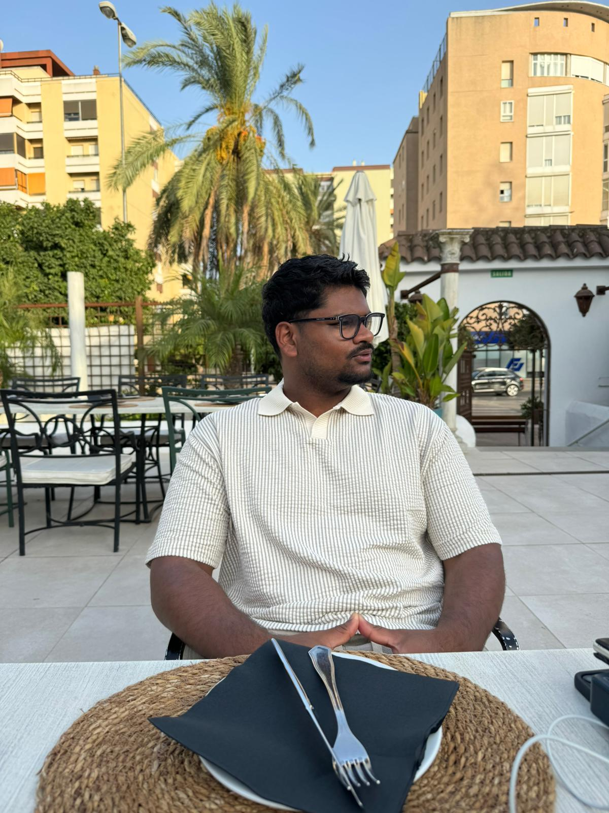

wie ben ik?
Scroll snel verder



Verhalen, vorm en techniek
Ik ben Jason, 23 jaar en ik kom uit Oosterhout. Ik studeer Communicatie & Multimedia Design (CMD) en breng graag verhalen tot leven. Mijn opleidingstraject begon op de mavo en daarna volgde ik een mbo opleiding.
Tijdens mijn mbo periode ontdekte ik mijn passie voor design en creativiteit. Na het behalen van mijn diploma wist ik dat ik verder wilde in een richting waarin ik mijn creativiteit zonder grenzen kon ontwikkelen. Daarom koos ik voor de opleiding CMD, waar ik me helemaal op mijn plek voel. De brede en afwisselende opleiding sluit perfect aan bij mijn interesses.
Ik hou van uitdagingen en leer graag nieuwe dingen, ook als ze niet direct met ontwerpen te maken hebben. Ik geloof dat je nooit uitgeleerd raakt en altijd kunt verbeteren. Die mindset neem ik mee in mijn werk: bij elk ontwerp streef ik naar groei, vernieuwing en een beter resultaat.
Waar ik goed in ben
Extra over mij
Ik draag graag mijn steentje bij aan de community. Zo ben ik actief in de kerk, waar ik mijn creativiteit ook kan inzetten. Ik maak onder andere podcasts, dagelijkse content voor sociale media en doe regelmatig fotografie.
Voor mijn huidige studie heb ik de opleiding Marketing & Communicatie afgerond. Hierdoor heb ik ervaring met het in de markt zetten van producten en het op een effectieve manier bereiken van consumenten. Die achtergrond helpt mij bij het ontwerpen van creatieve oplossingen die niet alleen mooi zijn, maar ook strategisch en doelgericht werken.